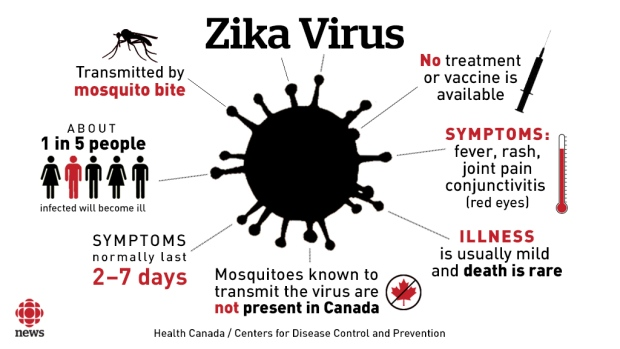
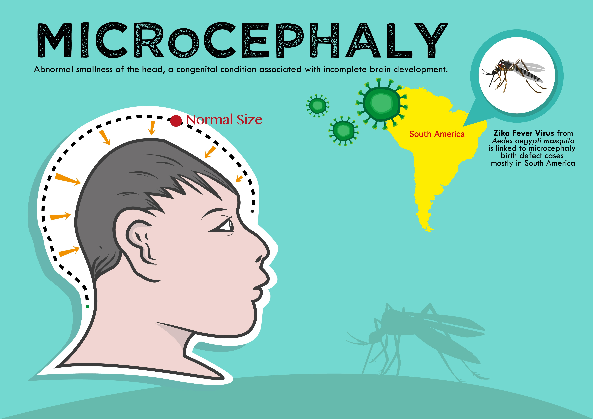
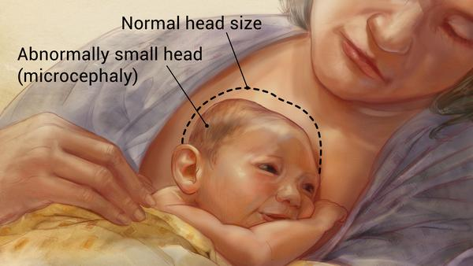

Microcephaly is a birth defect where a baby's head is smaller than expected when compared to babies of the same sex and age. Babies with microcephaly often have smaller brains that might not have developed properly. This can happen while the baby is still in the mother's womb or within the first few years of birth.
What are the causative factors of Microcephaly ?
- Zika virus is responsible for Microcephaly. This virus is primarily transmitted to people through the bite of an infected mosquito from the Aedes genus, mainly Aedes aegypti in tropical regions.
- Aedes mosquitoes usually bite during the day, peaking during early morning and late afternoon/evening.
- This is the same mosquito that transmits dengue, chikungunya and yellow fever.
- Sexual transmission of Zika virus is also possible. Other modes of transmission such as blood transfusion are being investigated.
What are the symptoms of microcephaly?
The main feature of microcephaly is a head size that is much smaller than normal for the child’s age and gender.Other signs and symptoms can vary widely from child to child. They can include: 
- poor appetite/feeding
- vision and hearing problems
- poor weight gain and growth
- very short stature or dwarfism
- mild to severe learning disabilities
- difficulty with movement and balance
What is the treatment and prevention for microcephaly?
- The best way to prevent from diseases spread by mosquitoes is to avoid being bitten altogether.
- A doctor may diagnose microcephaly at birth or during wellness exams throughout the baby's first 18 months of life.
- The head is measured and compared with standardized charts. CT scans or an MRI and blood tests may also be required.
- There is no treatment to make the head grow to normal size, but a medical professional may treat complications of microcephaly, such as hyperactivity or seizures.